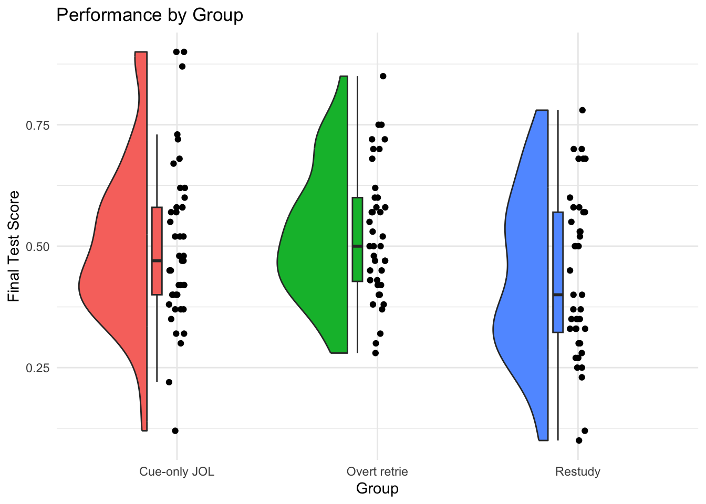
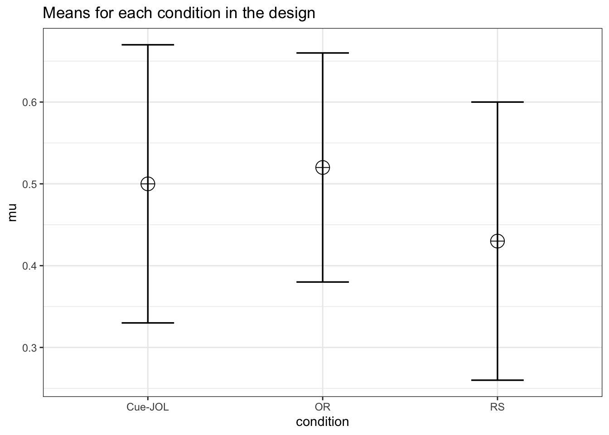
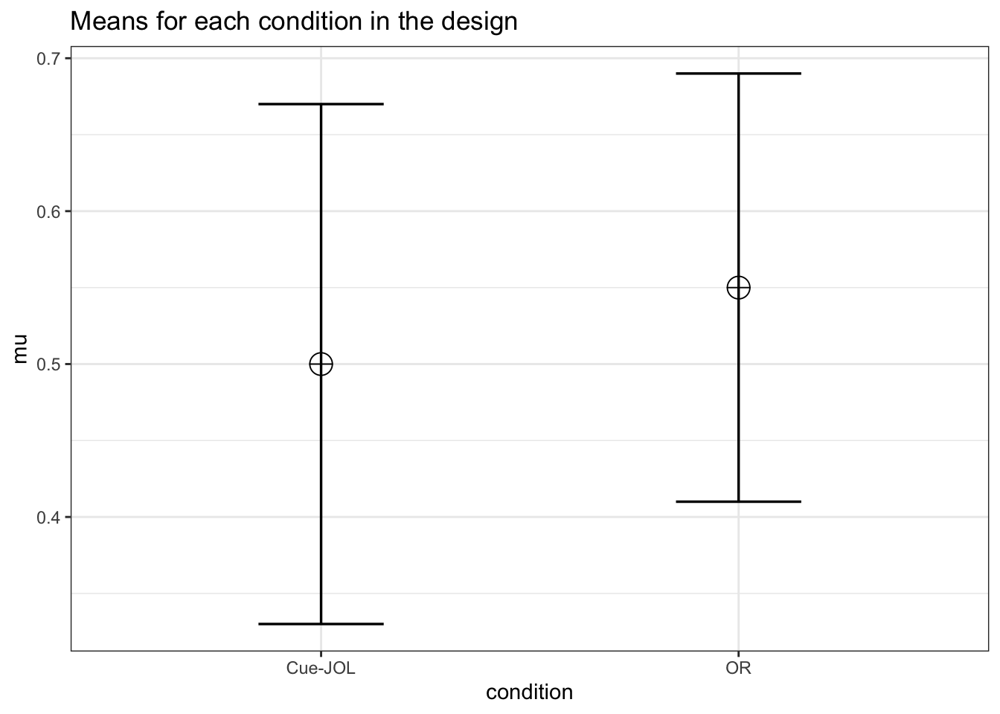
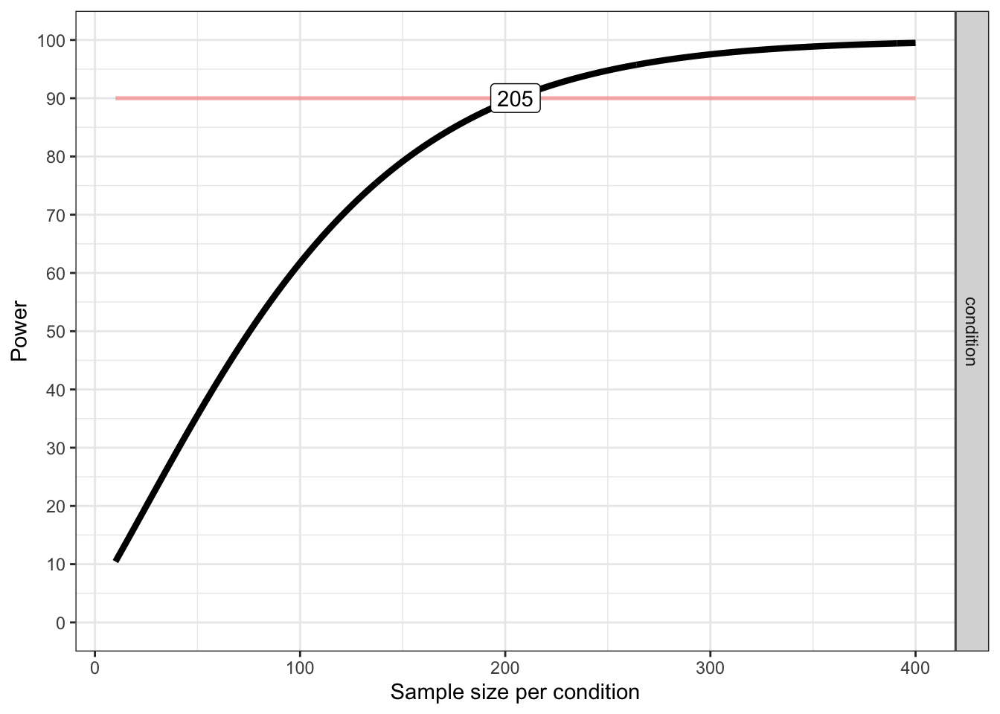

Warning: package 'ggrain' was built under R version 4.5.2
library(MOTE) #for getting ci around effect sizes
Warning: package 'MOTE' was built under R version 4.5.2
library(WebPower) #for calculating power
Warning: package 'lavaan' was built under R version 4.5.2
library(Superpower) #for simulating power
Research scenario
In today’s lab, we will be using data from Tekin et al., 2021; Experiment 1. In their study, participants viewed cue-target pairs (e.g., DOOR - HOUSE) during a study phase. After, groups either provided delayed judgments of learning (JOLs; e.g., given a cue word, how likely is it on a scale of 0-100 you will recall the target on a later test), attempted to retrieve the target word (DOOR-?), or restudied the same cue-target pairs (DOOR-HOUSE). Each group then took a final test over the pairs. The aim of their study was to determine whether engaging in retrieval practice or providing delayed JOLs had similar effects on memory.
Read in the data
First, let’s read in the data and then use View() to check it out.
Today’s dataset is called cue_data.csv. Let’s read it in and name it cue_data.
The data has 3 columns:
Participant: a numeric indicator of participant number
Total_Final: scores on the final test (percent correct)
Condition: delayed judgment (Cue-only JOL), retrieval (Overt retrie), or restudy the same pairs (Restudy) - there is also a condition called Cue-target J that we are not using.
Effect size
We are interested in the scores on the final test (Total Final) as a function of Condition (Condition). We will only be looking at three conditions: Restudy, Overt retrieval (retrieval practice), and Cue-Only JOL.
First, we will filter the data to remove Cue-target J from the Condition column.
Examine data.
Let’s take a look at the data, what changes might you want to make?
Visualize the differences between the three groups.
The visualization we are using is called a raincloud plot.

Run a model using lm() predicting Total_Final from Condition. Get a summary of your model.
What is your interpretation of each of the predictors? What does the F value tell you? What is the overall effect size?
Call:
lm(formula = Total_Final ~ Condition, data = cue_data)
Residuals:
Min 1Q Median 3Q Max
-0.38000 -0.10700 -0.02450 0.09425 0.40000
Coefficients:
Estimate Std. Error t value Pr(>|t|)
(Intercept) 0.50000 0.02413 20.719 <2e-16 ***
ConditionOvert retrie 0.02450 0.03476 0.705 0.4823
ConditionRestudy -0.06300 0.03476 -1.812 0.0724 .
---
Signif. codes: 0 '***' 0.001 '**' 0.01 '*' 0.05 '.' 0.1 ' ' 1
Residual standard error: 0.1582 on 120 degrees of freedom
Multiple R-squared: 0.0516, Adjusted R-squared: 0.03579
F-statistic: 3.264 on 2 and 120 DF, p-value: 0.04164
Maybe instead we want all possible comparisons. One option is to change the reference level and run another regression. Another option is to use emmeans.
Use emmeans to get all pairwise comparisons. Apply a bonferroni adjustment.
Interpret your comparisons. How do these comparisons differ (or not) from your model summary above?
pairs <-emmeans(model, pairwise ~ Condition, adjust ="bonferroni")# Look what happens if we don't adjust for multiple comparisons (compare this to your summary)emmeans(model, pairwise ~ Condition, adjust ="none")
Compare these to the Cohen’s d values that you calculated “by hand.” How do they compare?
Now, write an APA style summary of your results. This should include information about your overall model (e.g., F and R2) as well as each of the pairwise comparisons and all relevant information (t, p, effect size, 95% CIs). Make sure you have corrected for pairwise comparisons and state which correction you used.
# First, let's get all of the objects we will need. You can also do some of this within your summary, but I like to lay it all out here.mod_summary <-summary(model)aov_model <-anova(model)#descriptivesdescriptives <- cue_data %>%group_by(Condition)%>%summarise(mean=mean(Total_Final), sd=sd(Total_Final), n=n())cue_mean <-round(descriptives$mean[1], 2)cue_sd <-round(descriptives$sd[1], 2)overt_mean <-round(descriptives$mean[2], 2)overt_sd <-round(descriptives$sd[2], 2)restudy_mean <-round(descriptives$mean[3], 2)restudy_sd <-round(descriptives$sd[3], 2)#omnibus effectsaov_df_1 <- aov_model$Df[1]aov_df_2 <- aov_model$Df[2]aov_f_val <-round(aov_model$F[1], 2)aov_p_val <- aov_model$`Pr(>F)`[1]r_squared <-round(mod_summary$r.squared, 2)adj_r_squared <-round(mod_summary$adj.r.squared, 2)#get df for contrastscontrast_df <-summary(pairs)$contrasts$df[1]#Cue v. Overt (note: use t and p values from emmeans because it has the correction!)cvo_tval <-round(summary(pairs)$contrasts$t[1], 2)cvo_pval <-round(summary(pairs)$contrasts$p.value[1], 2)cvo_d <- cue_overt_d$estimate#Cue v. Restudy (note: use t and p values from emmeans because it has the correction!)cvr_tval <-round(summary(pairs)$contrasts$t[2], 2)cvr_pval <-round(summary(pairs)$contrasts$p.value[2], 2)cvr_d <- cue_restudy_d$estimate#Overt v. Restudy (note: use t and p values from emmeans because it has the correction!)ovr_tval <-round(summary(pairs)$contrasts$t[3], 2)ovr_pval <-round(summary(pairs)$contrasts$p.value[3], 2)ovr_d <- overt_restudy_d$estimate
Review the summary – notice all of the different pieces that are present!
We ran a linear regression to examine the effect of delayed judgments of learning (JOLs), retrieval practice, and overt retries on memory. An omibus test revealed a significant effect of condition on memory, F(2, 120) = 3.26, p .042). The model explained a small proportion of variance in memory, with an R2 = 0.05 and an adjusted R2 = 0.04. To find the source of this effect, we computed pairwise comparisons for each of our conditions. Participants’ memory in the delayed judgment condition (M = 0.5, SD 0.17) did not differ significantly from participants’ memory in the overt retrieval condition (M = 0.52, SD 0.14), \(t(120) = -0.7, p > .999\), \(d_s\) = -0.16, 95% CI [-0.59, 0.27], nor did it differ from participants’ memory in the restudy condition (M = 0.44, SD 0.17), \(t(120) = 1.81, p = .220\), \(d_s\) = 0.37, 95% CI [-0.06, 0.81]. However, participants in the overt retrieval condition had significantly greater memory scores than participants in the restudy condition (M = 0.44, SD 0.17), \(t(120) = 2.47, p = .040\), \(d_s\) = 0.57, 95% CI [0.12, 1.01]. In summary, we found that overt retrieval resulted in better memory than restudying, but neither of these methods differed from delayed judgment.
Power
Calculate Power with WebPower
Using the WebPower package, calculate the the number of participants per group we need to have 90% power in our model to detect a difference.
Note that most power calculators ask for Cohen’s \(f^2\) instead of \(R^2\), so we’ll need to calculate that first.
\(f^2 = R^2 / (1 - R^2)\)
How many participants do we need for our study?
r_squared <-summary(model)$r.squaredf_squared <- r_squared/(1-r_squared)# first, let's look at the help info for `wp.regression`?wp.regression# students: fill in the arguments below# WebPower::wp.regression(n=XXX, p1=XXX, f2=XXX, alpha=XXX, power=XXX)WebPower::wp.regression(n=200, p1=2, f2=NULL, alpha=0.05, power=.9)
Power for multiple regression
n p1 p2 f2 alpha power
200 2 0 0.06424069 0.05 0.9
URL: http://psychstat.org/regression
# note: you can plug in `NULL` for different arguments if you have different questions
Reviewer 2 asked you to calculate the power of Tekin et al (2021) Experiment 1 after you ran it. Set up a study design using the ANOVA_design function from Superpower. Use the same means, SD, and n (use 40 per group as SuperPowercannot do unequal sample sizes for one-way designs) from their Experiment 1 study (excluding the one condition). Run a power analysis on this data.
#first, let's look at what we need for this function?ANOVA_design#create objects for each parameterdesign <-"3b"# 3 levels of `condition` varying between subjectsn <-40# unequal ns dont work yet for thismu <-c(.50,.52, .43)# each group meansd <-c(0.17, .14, 0.17) # each group sdlabel_list =list("Condition"=c("Cue-JOL", "OR","RS")) # labels for each group#now, use ANOVA_design to specify the parameters of the datadesign_result <-ANOVA_design(design = design,n = n,mu = mu, sd = sd, label_list = label_list)
#check out the simulated data!design_result$dataframe
Now, let’s check out how much power we have. Here, we will run our analysis many times (nsims below) and seeing how many of those times we get a significant result.
nsims=500#number of times we do this should be larger than this, but it takes a while to run so we'll stick with 500 for this example!power_result <-ANOVA_power(design_result, nsims = nsims, seed =1234)
Power and Effect sizes for ANOVA tests
power effect_size
anova_Condition 66.8 0.06962
Power and Effect sizes for pairwise comparisons (t-tests)
power effect_size
p_Condition_Cue-JOL_Condition_OR 10.0 0.1379
p_Condition_Cue-JOL_Condition_RS 43.2 -0.4102
p_Condition_OR_Condition_RS 72.2 -0.5867
What is our power to detect the overall effect of Condition? What about the pairwise comparisons between the groups?
ANSWER: To detect the effect of Condition we have only 66.8% power (Yikes). To detect the cue-JOL vs. overt difference we have 10.0% power. To detect the Cue-JOL vs. Restudy difference we have 43.2% power. Finally, to detect the overt and restudy difference we have power of 72.2%.
What kind of power analysis would this be?
ANSWER: We’re doing it after we ran the study – Post-hoc
What do you think of the power for this study design?
ANSWER: Not very well powered study.
Now, we want to run a replication study. Let’s plan a study where we want to collect 100 Ps per group.
Change ANOVA_design to reflect just this difference. Set N = 100.
#create objects for each parameterdesign <-"3b"# 3 levels of `condition` varying between subjectsn <-100# unequal ns dont work yet for thismu <-c(.50,.52, .43)# each group meansd <-c(0.17, .14, 0.17) # each group sdlabel_list =list("condition"=c("Cue-JOL", "OR","RS")) # labels for each group#now, use ANOVA_design to specify the parameters of the datadesign_result <-ANOVA_design(design = design,n = n,mu = mu, sd = sd, label_list = label_list)

nsims=500# number of times we do this should be larger than this!power_result_vig_2 <-ANOVA_power(design_result, nsims = nsims, seed =1234)
Power and Effect sizes for ANOVA tests
power effect_size
anova_condition 97 0.06225
Power and Effect sizes for pairwise comparisons (t-tests)
power effect_size
p_condition_Cue-JOL_condition_OR 14.8 0.1320
p_condition_Cue-JOL_condition_RS 83.6 -0.4179
p_condition_OR_condition_RS 97.8 -0.5890
What would our power be using the current study parameters to detect overall effect? How about each pairwise comparison?
ANSWER: To detect the effect of Condition we have 97% power – much better! To detect the cue-JOL vs. overt difference we have 14.8% power. To detect the Cue-JOL vs. Restudy difference we have 83.6% power. Finally, to detect the overt and restudy difference we have power of 97.8%.
What kind of power analysis would this be?
ANSWER: We’re doing it before we run the replication, so its a priori – good!
What do you think of the power for this study design?
ANSWER: Much better, except for the effect of JOL vs OR is still very low. Why? Look back at Cohen’s d values - effect for JOL vs OR is only -0.16 while others are .41 and .58 (much larger)
Let’s say I want to power the study to be able to detect a .05 point difference on the final test between the Cue-Only JOLs and Overt Retrieval groups (e.g., the difference between their means).
Change ANOVA_design to reflect just this difference. Set N = 40.
design <-"2b"#now there are only 2 levels of the variable!n <-40#unequal ns dont work yet for thismu <-c(.50,.55) #each group meansd <-c(0.17, .14) #each group sdlabel_list =list("condition"=c("Cue-JOL", "OR")) # labels for each groupdesign_result <-ANOVA_design(design = design,n = n,mu = mu, sd = sd, label_list = label_list)

nsims=500#number of times we do this should be larger than this!power_result <-ANOVA_power(design_result, nsims = nsims, seed =1234)
Power and Effect sizes for ANOVA tests
power effect_size
anova_condition 30.2 0.03817
Power and Effect sizes for pairwise comparisons (t-tests)
power effect_size
p_condition_Cue-JOL_condition_OR 30.2 0.3305
What is our power to detect a .05 point difference with 40 per group?
ANSWER: We have 30% power (not great!)
Plot a power curve just for this difference. What sample size is needed to achieve 90% power?
plot_power(design_result, min_n =10, max_n =400)

Achieved Power and Sample Size for ANOVA-level effects
variable label n achieved_power desired_power
1 condition Desired Power Achieved 205 90.03 90
How many participants would you need to achieve 90% power?
ANSWER: You need 205 participants to have 90% power to detect a .05 difference between the two conditions.